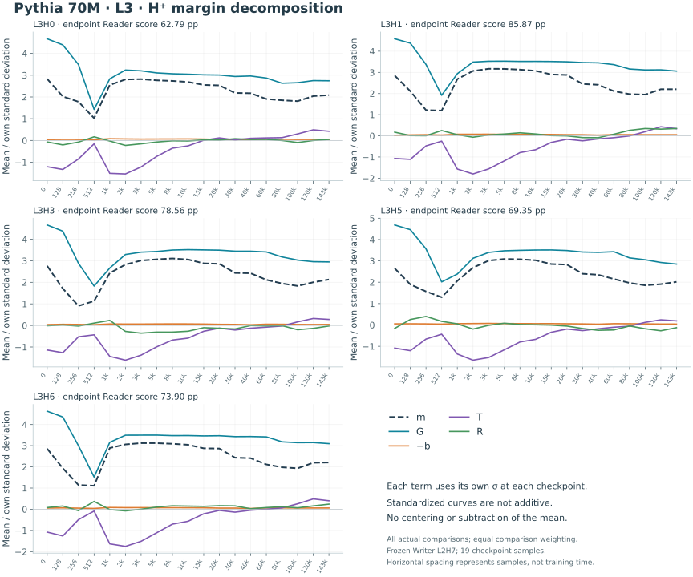
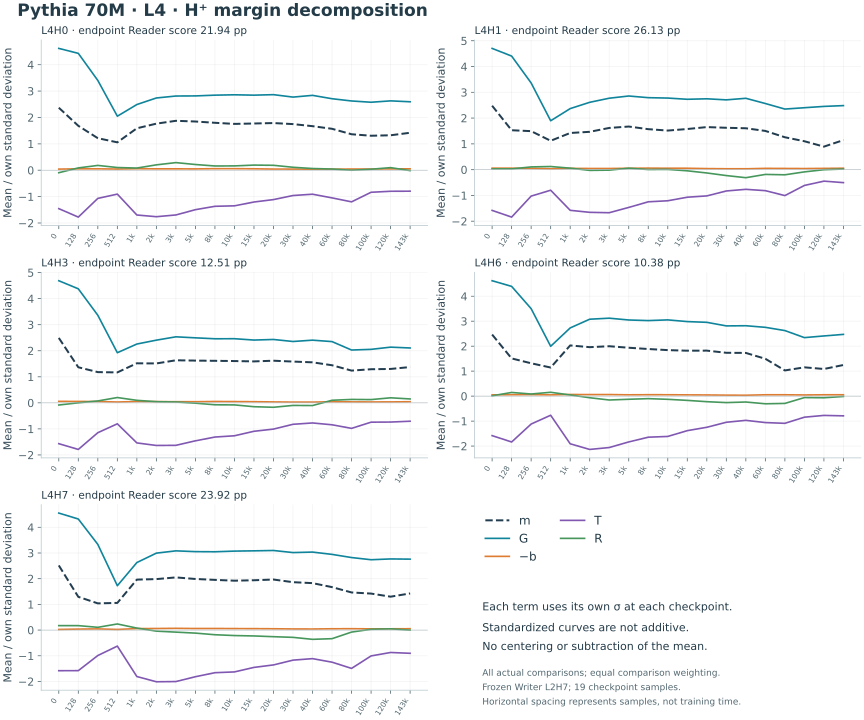
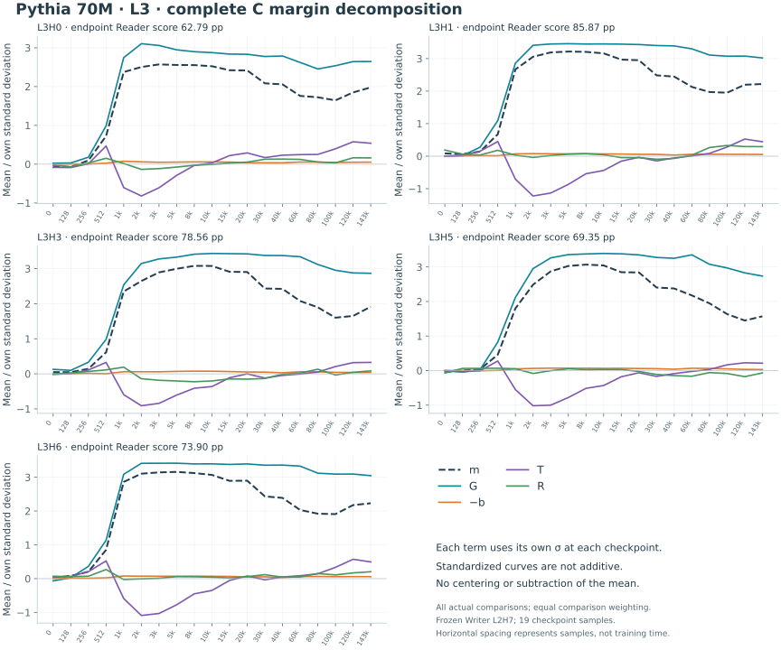
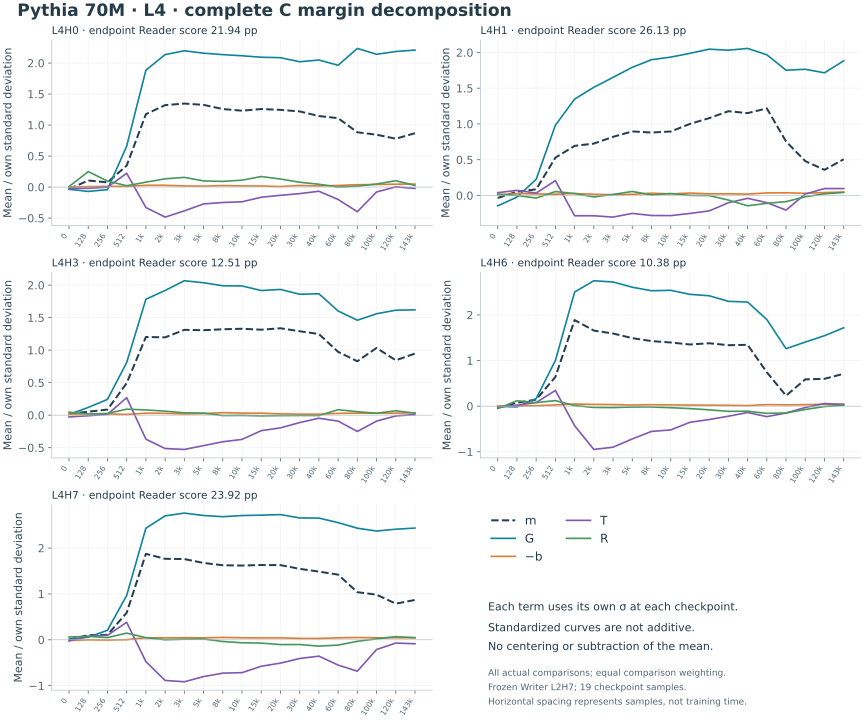

1 Why positive eigenvalues suggest matching
1.1 The joint matrix of a writer and a reader
In the induction pattern , two attention heads work together. At the historical position, an earlier head—the writer —uses its QK circuit to attend to the preceding . Its value projection reads the residual stream at , and its output projection writes the resulting information into the residual stream at . The later reader applies to this updated residual stream to form its key at historical , containing information about the preceding .
At the current position, the reader uses to form a query from the current residual stream. Its QK circuit compares this query with the keys at historical positions. For induction, this comparison favors the historical position because its key carries information about an matching the current token. The reader’s OV circuit then reads information about the historical successor from its residual stream and writes it into the residual stream at the current position, supporting the prediction of .
Using column vectors, define their K-composition matrix and its bilinear score by
(1)
Here are reader and writer inputs: represents current , while can represent any historical source token, matching or competing. The projection dimensions are , , and . The source contributes to the reader’s key at a candidate position, with writer attention weight . A previous-token writer typically gives the preceding token most weight. We omit and analyze .
A central question here is how this composition assigns a higher attention score to and representing the same token identity than to inputs representing different tokens, so that the reader can attend to and read from the correct historical successor.
1.2 A spectral clue, rather than a ranking conclusion
In 2022, Anthropic associated positive eigenvalues of the token-space matrix in a pure K-composition term with “same-matching” [2]. For one reader–writer pair, that matrix is , where maps one-hot token vectors to embeddings. Both contain the same QK–OV product, but includes embeddings and acts on one-hot inputs, while acts on residual representations. For the same one-hot vector on both sides, .
Anthropic weighted these matrices by , the earlier head’s mean attention to the immediately preceding position in example text, and computed the trace of their sum: where and denote the heads’ layers. Anthropic reported a correlation with behavioral prefix-matching scores in their small models [2].
The distinction between token embeddings and deep residual-stream representations matters here. Anthropic’s statistic selects pure K-composition paths: the query is projected directly from the embedding, while the key-side path passes the embedding through the writer’s OV matrix and then the reader’s K projection [2]. Deep residual inputs, however, contain not just token embeddings but also contributions from earlier attention heads and, when present, MLPs. We therefore use to study matching between these contextual representations without restricting them to embeddings.
1.2.0.1 Why a positive eigenvalue bias suggests self-matching
For a real eigenvector with positive eigenvalue , implies
(2)
This describes an eigenvector-aligned input. An arbitrary nonsymmetric matrix need not possess an orthonormal eigenbasis, or even a complete ordinary eigenbasis. Therefore this observation cannot be extended to every input by treating its eigenvectors as independent orthogonal coordinates.
For example,
(3)
Its eigenvectors and have eigenvalues and . Since and , expanding in this eigenbasis reveals a negative cross term:
(4)
Here the nonorthogonal eigenvectors yield a negative cross term that makes .
Even a nonnegative exact self-score would not establish that a contextual representation of the same token outranks all contextual representations of different tokens. That competitive question is the target of Section 3.
For RoPE, choose the convention and write
(5)
1.3 Select functional Writer–Reader routes
At a historical token position, the residual stream contains OV outputs written by many attention heads in earlier layers. The Reader forms its key from this combined representation. We focus on which of these OV messages actually supports the Reader’s induction behavior: attending from the current token A to a historical B that followed an earlier A. We test candidate heads individually and call the behaviorally relevant sources Writers.
Construct the repeated input. We use 5,000 medium-frequency token identities, defined by empirical frequency ranks 5,001–10,000 among 50,252 eligible shared token identities in a fixed Pythia reference corpus. This excludes the 5,000 most frequent eligible tokens and the lower-frequency tail. “Medium-frequency” refers to this reference ranking, rather than a universal boundary between common and rare tokens. Tokens here can be word pieces, not necessarily complete words.
We randomly group and order tokens from this pool into 25-token blocks, with no repeated token identity inside a block. The blocks are random token sequences, not natural-language passages. Each block is copied four times after the beginning-of-sequence token (BOS), producing a 101-token input. The assignment is balanced so that each of the 5,000 identities is a designated query token in ten distinct random blocks.
A query is one position where we inspect the Reader’s attention. We evaluate designated positions in copies 2, 3, and 4 of the block: each then has an earlier occurrence whose successor can be retrieved. Copy 1 provides the initial history and is not evaluated. This is what “the final three occurrences” means. There are therefore
A normal block has 24 designated query tokens; its 25th token supplies the successor of the 24th. We pack the 50,000 token–context combinations into 2,083 such blocks and one final block with eight designated tokens: . This gives 2,084 input sequences. The remaining positions in the last block are fillers. Every block, including its fillers, is repeated unchanged four times.

Measure attention to the correct successors. At a query A, the Reader assigns attention probabilities to the positions it can see. Softmax converts its raw attention scores, called logits, into probabilities that sum to one. For induction, the correct locations are the historical B positions immediately after earlier occurrences of A. We add the attention probabilities assigned to all these locations. For example, probabilities of 0.20, 0.15, and 0.10 on three correct B positions give a total of 0.45: 45% of the Reader’s attention goes to correct successors.
Let denote these correct historical positions for query , and let denote the Reader’s original-model attention logits. The total correct-successor attention is
Combine the three evaluated copies. The same designated token is tested once in copy 2, once in copy 3, and once in copy 4 of each input sequence. We calculate these three results separately because their available histories differ:
| Current query | Correct historical-successor positions |
|---|---|
| A in copy 2 | B after A in copy 1 |
| A in copy 3 | B after A in copies 1 and 2 |
| A in copy 4 | B after A in copies 1, 2, and 3 |
For token identity in context , write for the total correct-successor attention at its query in copy . Each result first sums the probabilities on the correct B positions visible to that query. We then take the equal-weight mean of the three results, rather than using only copy 4:
Finally, we average equally over the ten contexts of each token and over all 5,000 token identities:
The sum over correct positions is therefore within one query. The mean over copies combines the three tests of the same token in the same context; the outer means combine tokens and contexts. The three copies retain equal weight even though they have one, two, and three correct historical B positions, respectively.
Test each candidate attention head. For each candidate attention head in an earlier layer, its QK circuit determines how strongly it attends from a historical position B to the preceding A; its OV circuit writes the corresponding message into B’s residual stream. We isolate this QK-weighted OV contribution from the previous token and subtract its contribution to the Reader’s key. This removes the Reader’s QK matching against that specific message. The Reader’s QK parameters and its matching against the other OV messages remain intact. The actual query and the recorded Reader normalization denominator are also held fixed, and attention probabilities are recomputed over all visible positions.
Write for the total attention to correct successors after this removal. The removal decrease is combined in the same order. For each token and context , we compute the before-minus-after decrease separately in copies 2, 3, and 4, then average those three decreases equally:
The route’s final Reader score averages these values equally over all tokens and contexts:
Here ranges over all query positions in copies 2, 3, and 4, giving tests in total. Thus the expectation over includes all three evaluated copies; it is not an average restricted to copy 4.
This is a route-removal attention decrease, not the reader’s unmodified attention probability and not a relative percentage decrease. For example, means a decrease of 20 percentage points.
At Pythia’s final checkpoint, step 143,000, we retain every route satisfying both
The first condition requires removing the candidate head’s contribution to reduce correct-successor attention by more than ten percentage points. The second requires the head itself to assign more than 10% attention to the previous token on this probe. The retained heads are the Writers for the corresponding Reader routes.
The resulting cohort has 193 routes into 104 distinct Readers, across 70M, 160M, 410M, 1B, 1.4B, and 2.8B models. Their route counts are 10, 29, 36, 18, 36, and 64, respectively. Several routes may share a Reader or a Writer. We track these same endpoint-selected routes backward through the 19 checkpoints; early-checkpoint plots describe eventual endpoint routes, not routes newly selected at each earlier step. Negative early removal effects are retained.
The older OLMo matrix survey is used only as a separately identified descriptive comparison in Section 2.3. It is not presented as another cohort selected by this Pythia route-removal protocol.
2 Decomposing the matrix and its energy
2.1 Positive, negative, and antisymmetric contributions
Every real square matrix has the exact decomposition
(6)
Because , the scalar is equal to its own negative:
(7)
Consequently . This cancellation holds for the same vector on both sides. It does not remove from a cross-context score with .
The real symmetric matrix has a complete orthonormal eigenbasis. Writing separates mutually orthogonal directions, allowing its quadratic form to be read without nonsymmetric cross terms. Define
(8)
Here is the eigenvector for , and . Writing gives
(9)
Every squared coordinate is nonnegative, so the retained eigenvalue signs determine both inequalities. Either score is zero exactly when has no component in its corresponding positive or negative eigenspace.
The positive component rewards agreement in its weighted directions.
2.2 An additive energy accounting
Define the matrix energy as its squared Frobenius norm. Symmetric and antisymmetric matrices are orthogonal under the Frobenius inner product. In addition, and occupy disjoint eigenspaces, so . Expanding the squared norm therefore gives
(10)
For each composition path, we calculate its full-distance energy fractions in three steps: first calculate squared energy separately at every distance, then sum those energies over distances, and finally take the component-to-complete-C ratio. At each distance , we form , , and , retaining every eigenvalue, and calculate their squared Frobenius norms. For any one component , the resulting fraction is
Equivalently, divide both the numerator and denominator by 2,048. For the positive component, this gives
For example, if these two mean squared energies are 30 and 100, the positive-energy fraction is 30%. We average the squared energies, after computing them at each distance; we do not average the matrices before squaring. Nor do we take an equally weighted average of the per-distance fractions, which can give a different answer when complete-C energy varies with distance. The distance-wise additive identity above ensures . Section 2.3 plots the distribution of these path-level fractions. A matrix-energy fraction is distinct from a fraction of an observed attention score or margin.
2.3 Energy distributions and route-removal fits
The first comparison asks whether functional paths have a different energy composition from ordinary paths in the same models. The 193 functional Pythia routes are selected using the attention decrease after removing a route, together with the Writer’s previous-token attention, as defined in Section 1.3. Throughout this comparison and the fits below, a functional route’s Reader score means that removal-induced decrease in total correct-successor attention, measured in percentage points.
The ordinary background comes from an earlier control pool with a different screening rule: its Reader’s unmodified total correct-successor attention is at most 10%, and its Writer’s previous-token attention is also at most 10%. This pool was not selected by a route-removal test. We retain its actual definition here; its raw Reader attention is not the removal-decrease score used to select the functional routes or fit Figure 2. For both groups, we compare the full spectra, rather than only a few leading eigenvectors.

Ordinary paths concentrate near 25% positive, 25% negative, and 50% antisymmetric energy. The functional Pythia paths shift toward a larger positive fraction and a smaller negative fraction. This distributional shift motivates the next question: within the selected cohort, does positive energy track the route’s actual behavioral contribution?

The association is positive at every scale:
| Model | Routes / Readers | Pearson r | Spearman ρ | OLS R² |
|---|---|---|---|---|
| 70M | 10 / 10 | 0.962 | 0.891 | 0.926 |
| 160M | 29 / 22 | 0.701 | 0.725 | 0.492 |
| 410M | 36 / 19 | 0.774 | 0.664 | 0.599 |
| 1B | 18 / 10 | 0.893 | 0.841 | 0.797 |
| 1.4B | 36 / 16 | 0.843 | 0.819 | 0.710 |
| 2.8B | 64 / 27 | 0.640 | 0.632 | 0.409 |
Across all 193 paths, Pearson and OLS . After subtracting each scale’s mean from both variables, . The positive association therefore is not explained only by a difference between model sizes.
Download the fit coefficients, conditional intervals, and scope definitions.
3 Complete matching scores and positive-spectral geometry
We start from the complete matching score to ask when different token identities can each rank their own representations highest. Token representations vary around their respective centers. The full margin connects this requirement to the symmetric and antisymmetric parts of , and then identifies the role of eigenvector directions associated with positive eigenvalues of within that same comparison.
Let token have a center in a shared space. Two representations and can differ through deviations around that same center; a competing token has its own center : The deviations capture variation across contexts and layers. For a matching score , define the pairwise margin Self-matching has the strictly highest score when for every competing representation under the variations being considered. Modern Hopfield networks address a related separation-and-perturbation problem: comparing a perturbed input with fixed stored patterns . In our setting, the representations on both sides of a score vary across contexts and layers, so we expand the deviations of both same-token and different-token representations.
3.1 From the complete matching score to positive geometry
Recall that the complete Reader–Writer composition takes two residual representations as its left and right inputs: The reader maps through ; passes through the writer’s value and output maps and the reader’s key map. Fix a common distance and suppress . Two representations of token and one of token are
(11)
Each token has its own center, chosen as an observed mean or specified population center. Deviations across contexts and layers are expressed in a common residual coordinate frame.
3.1.0.1 Keep the complete score in the margin decomposition.
Direct expansion gives
(12)
To separate the center contributions, first substitute and expand: The last line uses . Since , the cross terms satisfy . Expanding the symmetric quadratic form therefore gives Solving for the cross term gives Substitute this expression into the first expansion:
(13)
Substituting this center identity into (12) gives the complete expanded margin: The last two terms combine as . Grouping this full expression, define
(14)
(15)
(16)
The exact complete-score margin is
(17)
Here the three terms describe different parts of the score comparison.
Center separation . This term measures how the symmetric part weights the difference between token centers. It enters the margin as . Since has both positive and negative parts, this contribution can have either sign.
Signed center bias . This combines the quadratic-form imbalance with the antisymmetric center interaction . The first compares the centers’ self scores under ; the second records the direction-dependent cross score from . Because is subtracted, a positive value reduces the self-matching margin and a negative value increases it.
Representation variation . This collects all terms involving deviations from the centers: the first representation’s deviation against the center difference, the center against the other deviations, and interactions between deviations on both sides. It retains the contributions to contextual variation and may increase or decrease the actual margin.
3.1.0.2 Ask for self-matching to win for both token identities.
We have compared token i’s query with representations of i and j. Now reverse the roles and check whether token j’s query also gives a higher score to its own token. The two query representations are and . Each is its token’s center plus a deviation, and we keep both deviations in the calculation. Using the same and the same right-input observations and , the two directed margins are Each directed margin fixes one token on the left and compares its same-token observation with the other token’s observation on the right. Simultaneous self-matching requires both complete margins to be positive. The reverse expansion uses , , and Adding the two full margins yields
(18)
The quadratic-form imbalance and antisymmetric center interaction in reverse sign and cancel. The variation terms remain, including their interactions with ; they need not cancel.
Since both margins must be positive, their sum must be positive. Thus a necessary condition is
(19)
The contribution is nonpositive, while the summed variation can help or hurt. The -weighted center gap supplies a nonnegative contribution to this full comparison; its required size depends on the other terms.
A positive sum alone is insufficient. Each individual directed margin must satisfy Thus and the corresponding variation term remain important in each direction, even though the signed center biases cancel in the sum.
One optimization direction for making many different tokens prefer their own representations is therefore to enlarge their -weighted center gaps, , across token pairs. These gaps supply the positive separation contribution to the summed self-matching margins.
3.1.0.3 Use the observed energy composition to focus the analysis.
The expansion identifies how the positive part contributes to simultaneous matching of the observed representations. The archived OLMo/DataDecide measurements provide a second reason to examine it: is shifted toward larger energy fractions in the separately identified selected-pair distributions in Figure 1. Figure 2 reports the distinct Pythia route-removal fit; neither measurement makes energy alone a ranking guarantee.
This concentration may echo the optimization direction above: as training progresses, the model may concentrate positive spectral energy on selected directions that increase by separating token centers. We therefore examine which directions are selected and how their weights contribute to separation. This is a possible interpretation of the learned concentration, while the complete one-way margins retain the contributions of , , signed bias, and contextual variation.
3.1.0.4 Resolve the positive contribution in the original space.
Applying the same expansion to the contribution gives
(20)
The first term compares token centers. The remaining terms couple the first representation’s deviation to the center difference, its center to the other deviations, and deviations on both sides. The matrix acts in every term.
Symmetry of gives Rearranging the center comparison therefore yields
(21)
Substituting this center identity into (20) gives the complete expanded margin: The last two terms combine as . Grouping the full expression now gives the three contributions in the original coordinates:
(22)
(23)
(24)
Then the exact margin is
(25)
measures center separation under . The signed bias compares the two center quadratic forms: a larger competing-center value is adverse, while a smaller one is favorable. The signed term records the representation deviations and their interactions; it can help or hurt a particular comparison.
3.1.0.5 Read the effect of the positive directions and their weights.
Write , where is a unit eigenvector and . Substituting this decomposition into the geometry term gives
(26)
The squared difference measures how far apart the token centers lie along ; sets its contribution to . Directions with larger center differences, together with greater positive weights, enlarge this geometry contribution to the matching margin.
The same directions and weights also enter and : Thus weights center differences, center magnitudes, and representation deviations through the same selected directions. Their signed combination determines the same-token score advantage.
3.1.0.6 View the same comparison inside the positive subspace.
Let be the number of positive eigenvalues. The columns of are the corresponding orthonormal directions, and contains their positive eigenvalues. Factoring these weights gives
(27)
Here contains the coordinates along the selected directions. Multiplication by turns coordinate into . The same transformation is applied to , so their inner product weights the product of the two coordinates by , reproducing .
We study the token distribution inside this shared space to understand how the selected directions increase center separation and strengthen the same-token score advantage.
Map centers and deviations separately. By linearity, each original representation maps to the sum of its mapped center and deviation. Define
(28)
Applying these definitions to , , and gives Thus representations of token share the center code , while their contextual or layer deviations remain distinct.
Expand the same margin in these coordinates. Apply (27) to both scores, then substitute the mapped inputs: The center term can be separated by expanding : Substituting this identity into the complete margin gives We can now identify the three contributions in the mapped space:
(29)
These are the original-space quantities in new coordinates. For example, The same bilinear identity converts the two center quadratic forms in into squared norms and the two deviation products in into inner products. Thus center distances, center-norm differences, and the distribution of deviations describe the same margin as (25), now through the token distribution within the selected space.
3.1.0.7 Keep the component interpretation attached to the complete score.
Replacing by in the original-space definitions gives , , and . Let Then the complete quantities satisfy
(30)
Every positive-component term is part of the same complete comparison. Although , the signed norm and deviation terms can help or hurt a directed margin; contributes to both directed center matching and variation. Component margins must be evaluated against the same competitor chosen using the full score, rather than selecting a separate competitor for each component.
3.2 Position-wise competition, variability, and a direction intervention
The derivation in Section 3.1 concerns a fixed operator. We now measure its terms on the actual finite-sequence competition, retaining the different RoPE distance of every candidate. The focused training analysis uses all ten selected 70M routes, with Writer L2H7, across all 19 checkpoints.
3.2.1 Measure each actual position-wise margin
For each query position , let be the Reader-layer pre-affine-LayerNorm standardized input. A candidate key at position reads the Writer-layer pre-affine-LayerNorm standardized input at its source position ; call that vector . Thus the query and historical representations can come from different layers. Position has no previous-token Writer source and uses a zero direct-route source. Position uses the actual BOS input, whose center is stored separately.
For an operator family , the structural score and each correct–incorrect margin are
The candidate set contains all causally visible positions in the same sequence, including BOS and the query’s own position. All correct historical-successor positions are excluded from . We compare every eligible correct position with every eligible incorrect position: 9,524,808 position scores and 20,849,616 margins per route and checkpoint. The 5,000 token identities do not form a cross-sequence pool of 4,999 arbitrary competitors.
In these numerical experiments, includes the usual attention scale, and the learned LayerNorm gains are folded into the projection matrices acting on standardized inputs. The structural score is kept separate from the native full logit and the native direct-route logit. Reader scores still come from the native intervention in Section 1.3, including the actual Writer attention and Reader affine/normalization factors.
3.2.2 A common reference, and why the exact identity needs R
Use the same Writer-layer token centers on both sides. If the query token is and the incorrect Writer-source token is , define . For the zero-source key at , both the source and its center are zero; for , the separately stored BOS center is used. Reader-layer centers are stored separately; their displacement from the Writer reference stays in , rather than being silently removed.
Our implemented common reference is the full-distance average,
For , the positive part is taken at each distance before averaging. The subscript “reference” does not mean the single matrix at . Actual sequence distances extend to 100, while the same predeclared 0–2047 reference is retained. With , set
Then, comparison by comparison,
Here measures symmetric center separation; retains the signed center bias, including the antisymmetric center contribution for complete ; and contains contextual and cross-layer deviations from that common center reference. R restores the two candidates’ actual distance-dependent matrices. Cross-distance stability can make it small, but is not a reason to omit it from an exact identity.
For the standardized figures, both the mean and standard deviation are computed over the same 20,849,616 comparisons, with equal comparison weight. We also save a separate mean that first averages within each query, then weights contexts and token identities equally. These weighting conventions are explicitly named in the downloadable data; they are not interchanged.
3.2.3 Read mean advantage relative to its variation
A mean does not say how consistently the advantage appears. We therefore display, for each term ,
This divides by the standard deviation, not the variance; we do not subtract the mean. It records the signed mean in units of that term’s own spread. Each component and checkpoint has its own denominator. Consequently, the standardized curves do not add to the standardized margin. The additive identity remains the raw-score identity above; raw means are available alongside every trajectory.
Consider step 120,000. L3H5 and L4H1 have almost the same average , 4.543 and 4.598, respectively. But their complete- contextual terms have standard deviations 2.549 and 11.230. Their full margins have means 5.001 and 4.092, and standard deviations 3.453 and 11.432. Thus is 1.448 versus 0.358. A similarly large positive center advantage can coexist with very different distributions of actual correct–incorrect margins.
Large means that often makes a substantial positive or negative adjustment to a particular comparison. It does not mean that the signed mean of must be negative, or that erases for every token pair. Bias, position corrections, and covariances still matter.




3.2.4 Trace the complete margin back to positive geometry
Linearity gives the exact component accounting
We retain Section 2.1’s convention: contains the signed negative eigenvalues and is negative semidefinite. The diagnostic export uses the positive magnitude internally; its negative contribution is written here with the signed convention throughout. The antisymmetric part has , but its bias, contextual, and position terms need not vanish.
In the endpoint measurements, the signed mean of accounts for 97.5–100.0% of the signed mean of in L3, and 84.9–99.9% in L4. Within L3’s positive margin, the signed mean of is 82.9–91.8% of the signed mean of . For L4 it exceeds 100% because a negative mean offsets some of the geometric advantage. These comparisons use matched raw means on the same finite population; they describe the additive terms, not matrix-energy shares or proportions of attention probability.
For example, at L3H0’s endpoint the comparison-weighted means are
The complete margin is therefore numerically close to its positive-component margin, and much of that positive margin comes from center separation. This is the sense in which and contribute substantially. It does not replace the per-comparison accounting of .
The position correction is typically smaller in score-difference magnitude. Across the mature 70M checkpoints from step 20,000 onward, the median is 5.12% for C and 3.18% for H⁺. It is not uniformly negligible: the largest full- ratio in that set is 34.2% (L4H0, step 30,000). These are RMS ratios of observed score terms, not Frobenius-energy fractions of matrices. We retain throughout.
Endpoint raw means and variation, by head
| Reader | μ(G⁺) | μ(m⁺) | μ(mC) | σ(TC) | Reader score (pp) |
|---|---|---|---|---|---|
| L3H0 | 3.377 | 4.075 | 4.135 | 1.633 | 62.790 |
| L3H1 | 7.965 | 9.109 | 9.340 | 3.031 | 85.869 |
| L3H3 | 6.826 | 7.654 | 7.789 | 3.242 | 78.561 |
| L3H5 | 4.847 | 5.279 | 5.280 | 2.727 | 69.345 |
| L3H6 | 6.040 | 7.103 | 7.266 | 2.500 | 73.896 |
| L4H0 | 6.379 | 4.410 | 4.996 | 5.200 | 21.943 |
| L4H1 | 4.538 | 3.305 | 3.894 | 7.479 | 26.128 |
| L4H3 | 7.810 | 5.529 | 5.808 | 5.464 | 12.508 |
| L4H6 | 4.175 | 2.761 | 2.765 | 3.775 | 10.383 |
| L4H7 | 8.054 | 5.315 | 6.168 | 6.534 | 23.921 |
Comparison-weighted score statistics; Reader score is the endpoint native correct-successor attention decrease from single-route removal, in percentage points.
3.2.5 Why L4’s contextual variation is larger
The contextual term also decomposes linearly:
Its variance includes all cross-covariances. We therefore cannot identify the source of its spread by adding three standard deviations, or by reading matrix-energy fractions alone.
A supplementary, aligned sequence-0 CPU diagnostic at step 120,000 helps separate these effects. L4H1 has and ; its algebraic sum without has standard deviation 4.75. For L3H5 the corresponding values are 2.82, 1.18, and 1.95. L4H1’s antisymmetric squared-energy fraction is 43.91%, compared with 18.59% for L3H5; its negative fraction is also larger, 13.25% versus 3.05%.
In that diagnostic, for L4H1. This is a signed covariance attribution that includes interactions with the other terms, not an independent causal percentage. The results support a substantial antisymmetric contribution to L4’s larger variation, while retaining contributions from the negative component and their covariances. The diagnostic is a separate CPU replica on one sequence, not an assertion of bitwise identity with the production GPU capture or a full-population intervention.
A standardized margin is useful for late-stage comparisons, but it is not automatically a universally better predictor. At step 120,000 the correlation with the native removal score rises from r=0.695 for the raw mean margin to r=0.944 for . At the endpoint it rises from 0.681 to 0.932. Pooled over all 190 route–checkpoint points, however, the raw mean gives r=0.869 and the standardized mean r=0.845. Training stage changes the relationship; we keep checkpoint-specific fits and Reader-grouped checks rather than treating the pooled curve as a causal law.
3.2.6 Rotate H⁺ directions while preserving its spectrum
The positive center term depends on both eigenvalues and directions:
We test this distinction by fitting one fixed orthogonal ambient rotation per head, then applying it across every distance and every evaluation sequence:
The full positive spectrum, rank, trace, and squared Frobenius energy are preserved. The original and are fixed. The constructed frame also keeps the rotated positive support orthogonal to the old negative support, so the new positive component is the actual positive part of the recombined symmetric matrix, rather than merely an added PSD term.
The rotation is fitted on sequence 0 to reduce while penalizing changes in the reference contextual term. The one-percent geometric target applies to that fitting sequence’s center span; it is not a claim that becomes one percent on all 2,084 sequences. We then freeze the rotation and evaluate all 2,084 sequences—150,000 queries and 20,849,616 margins per head. The other 2,083 sequences are not used to optimize the directions, but the reference centers are shared, so this is not an independent-center generalization test.
For behavior, we replace the corresponding positive-operator contribution in native logits and recompute attention over all causal positions. This is an operator-level native-logit intervention, not a claim that an arbitrary rotated operator is realizable by one same-width set of physical Q/K parameters.
The following panels show one head at a time. For each score component, both versions use that component’s original standard deviation as the fixed denominator. This preserves a comparable scale before and after the intervention; recomputing a smaller denominator after rotation could hide a reduction in magnitude. Raw means are printed underneath. The accompanying table also reports each version’s mean divided by its own standard deviation, so amplitude reduction and distributional separation can be read separately. Reader scores remain in percentage points.
L3H0Reader score: 62.79 → 6.05 pp

| Term | Before mean | After mean | Before σ | After σ | Before μ/σ | After μ/σ |
|---|---|---|---|---|---|---|
| G⁺ | 3.3765 | 0.7753 | 1.2308 | 0.2994 | 2.7435 | 2.5893 |
| b⁺ | -0.0512 | -0.0122 | 0.9764 | 0.2618 | -0.0525 | -0.0467 |
| T⁺ | 0.6429 | -0.1091 | 1.5174 | 0.7404 | 0.4237 | -0.1474 |
| R⁺ | 0.0041 | 0.0035 | 0.0848 | 0.0431 | 0.0489 | 0.0803 |
| m⁺ | 4.0748 | 0.6819 | 1.9552 | 0.7493 | 2.0841 | 0.9100 |
| TC | 0.8820 | 0.1300 | 1.6330 | 0.8850 | 0.5401 | 0.1468 |
| mC | 4.1352 | 0.7423 | 2.0895 | 0.9525 | 1.9791 | 0.7793 |
L3H1Reader score: 85.87 → 4.91 pp

| Term | Before mean | After mean | Before σ | After σ | Before μ/σ | After μ/σ |
|---|---|---|---|---|---|---|
| G⁺ | 7.9654 | 1.3805 | 2.6021 | 0.5515 | 3.0611 | 2.5033 |
| b⁺ | -0.1112 | -0.0218 | 2.1060 | 0.4854 | -0.0528 | -0.0449 |
| T⁺ | 0.9871 | -0.2435 | 2.9164 | 1.3136 | 0.3385 | -0.1854 |
| R⁺ | 0.0449 | 0.0065 | 0.1296 | 0.0549 | 0.3464 | 0.1177 |
| m⁺ | 9.1085 | 1.1652 | 4.1318 | 1.3736 | 2.2045 | 0.8483 |
| TC | 1.3451 | 0.1145 | 3.0313 | 1.4765 | 0.4437 | 0.0775 |
| mC | 9.3404 | 1.3971 | 4.2091 | 1.5745 | 2.2191 | 0.8874 |
L3H3Reader score: 78.56 → 6.65 pp

| Term | Before mean | After mean | Before σ | After σ | Before μ/σ | After μ/σ |
|---|---|---|---|---|---|---|
| G⁺ | 6.8256 | 1.2385 | 2.3162 | 0.4922 | 2.9469 | 2.5161 |
| b⁺ | -0.0920 | -0.0196 | 2.0188 | 0.4261 | -0.0456 | -0.0459 |
| T⁺ | 0.7392 | -0.3140 | 2.6375 | 1.2506 | 0.2802 | -0.2511 |
| R⁺ | -0.0028 | 0.0005 | 0.1159 | 0.0611 | -0.0244 | 0.0089 |
| m⁺ | 7.6539 | 0.9447 | 3.5911 | 1.2551 | 2.1314 | 0.7527 |
| TC | 1.0564 | 0.0033 | 3.2423 | 1.7987 | 0.3258 | 0.0018 |
| mC | 7.7888 | 1.0795 | 4.0693 | 1.9325 | 1.9141 | 0.5586 |
L3H5Reader score: 69.35 → 3.06 pp

| Term | Before mean | After mean | Before σ | After σ | Before μ/σ | After μ/σ |
|---|---|---|---|---|---|---|
| G⁺ | 4.8470 | 0.9205 | 1.6996 | 0.3796 | 2.8518 | 2.4248 |
| b⁺ | -0.0663 | -0.0149 | 1.5825 | 0.3432 | -0.0419 | -0.0435 |
| T⁺ | 0.3743 | -0.2338 | 1.9541 | 0.9381 | 0.1916 | -0.2492 |
| R⁺ | -0.0088 | -0.0039 | 0.0697 | 0.0373 | -0.1265 | -0.1038 |
| m⁺ | 5.2788 | 0.6977 | 2.6165 | 0.9733 | 2.0175 | 0.7169 |
| TC | 0.5813 | -0.0268 | 2.7273 | 1.6832 | 0.2131 | -0.0159 |
| mC | 5.2804 | 0.6993 | 3.3625 | 1.9394 | 1.5704 | 0.3606 |
L3H6Reader score: 73.90 → 2.18 pp

| Term | Before mean | After mean | Before σ | After σ | Before μ/σ | After μ/σ |
|---|---|---|---|---|---|---|
| G⁺ | 6.0401 | 1.1119 | 1.9508 | 0.4391 | 3.0962 | 2.5323 |
| b⁺ | -0.0874 | -0.0174 | 1.5035 | 0.3789 | -0.0581 | -0.0459 |
| T⁺ | 0.9507 | -0.2115 | 2.3761 | 1.1460 | 0.4001 | -0.1845 |
| R⁺ | 0.0250 | 0.0025 | 0.1043 | 0.0372 | 0.2401 | 0.0677 |
| m⁺ | 7.1032 | 0.9203 | 3.2203 | 1.1938 | 2.2058 | 0.7709 |
| TC | 1.2369 | 0.0747 | 2.4999 | 1.2746 | 0.4948 | 0.0586 |
| mC | 7.2659 | 1.0830 | 3.2575 | 1.3379 | 2.2305 | 0.8095 |
L4H0Reader score: 21.94 → 2.27 pp

| Term | Before mean | After mean | Before σ | After σ | Before μ/σ | After μ/σ |
|---|---|---|---|---|---|---|
| G⁺ | 6.3794 | 1.5189 | 2.4586 | 0.6107 | 2.5947 | 2.4872 |
| b⁺ | -0.1097 | -0.0250 | 2.0547 | 0.5856 | -0.0534 | -0.0427 |
| T⁺ | -2.0737 | -0.9829 | 2.6110 | 1.8469 | -0.7942 | -0.5322 |
| R⁺ | -0.0052 | 0.0038 | 0.3543 | 0.2770 | -0.0146 | 0.0138 |
| m⁺ | 4.4103 | 0.5648 | 3.1055 | 1.7222 | 1.4201 | 0.3280 |
| TC | -0.1174 | 0.9734 | 5.1998 | 4.2111 | -0.0226 | 0.2311 |
| mC | 4.9963 | 1.1508 | 5.7522 | 4.1665 | 0.8686 | 0.2762 |
L4H1Reader score: 26.13 → 2.17 pp

| Term | Before mean | After mean | Before σ | After σ | Before μ/σ | After μ/σ |
|---|---|---|---|---|---|---|
| G⁺ | 4.5382 | 1.1935 | 1.8269 | 0.4715 | 2.4841 | 2.5309 |
| b⁺ | -0.0704 | -0.0187 | 1.2597 | 0.4291 | -0.0559 | -0.0436 |
| T⁺ | -1.3088 | -0.7420 | 2.6005 | 1.3709 | -0.5033 | -0.5412 |
| R⁺ | 0.0054 | -0.0018 | 0.2218 | 0.1543 | 0.0242 | -0.0116 |
| m⁺ | 3.3051 | 0.4684 | 2.8836 | 1.3382 | 1.1462 | 0.3500 |
| TC | 0.7186 | 1.2855 | 7.4790 | 5.9968 | 0.0961 | 0.2144 |
| mC | 3.8939 | 1.0571 | 7.6959 | 5.9497 | 0.5060 | 0.1777 |
L4H3Reader score: 12.51 → 1.50 pp

| Term | Before mean | After mean | Before σ | After σ | Before μ/σ | After μ/σ |
|---|---|---|---|---|---|---|
| G⁺ | 7.8103 | 1.9948 | 3.7103 | 0.7943 | 2.1050 | 2.5115 |
| b⁺ | -0.1320 | -0.0320 | 3.1015 | 0.7070 | -0.0426 | -0.0452 |
| T⁺ | -2.4555 | -1.2407 | 3.4782 | 2.6131 | -0.7060 | -0.4748 |
| R⁺ | 0.0419 | 0.0013 | 0.2805 | 0.2443 | 0.1495 | 0.0052 |
| m⁺ | 5.5287 | 0.7873 | 4.0270 | 2.5170 | 1.3729 | 0.3128 |
| TC | 0.0483 | 1.2631 | 5.4642 | 4.6462 | 0.0088 | 0.2718 |
| mC | 5.8078 | 1.0664 | 6.1289 | 4.5169 | 0.9476 | 0.2361 |
L4H6Reader score: 10.38 → 0.42 pp

| Term | Before mean | After mean | Before σ | After σ | Before μ/σ | After μ/σ |
|---|---|---|---|---|---|---|
| G⁺ | 4.1746 | 1.1007 | 1.6883 | 0.4616 | 2.4727 | 2.3847 |
| b⁺ | -0.0850 | -0.0175 | 1.5651 | 0.4072 | -0.0543 | -0.0430 |
| T⁺ | -1.4935 | -0.7214 | 1.8927 | 1.5014 | -0.7891 | -0.4805 |
| R⁺ | -0.0049 | -0.0084 | 0.3499 | 0.3051 | -0.0139 | -0.0276 |
| m⁺ | 2.7612 | 0.3885 | 2.2146 | 1.3445 | 1.2468 | 0.2889 |
| TC | 0.1261 | 0.8982 | 3.7749 | 3.2346 | 0.0334 | 0.2777 |
| mC | 2.7649 | 0.3922 | 3.8960 | 2.9527 | 0.7097 | 0.1328 |
L4H7Reader score: 23.92 → 1.72 pp

| Term | Before mean | After mean | Before σ | After σ | Before μ/σ | After μ/σ |
|---|---|---|---|---|---|---|
| G⁺ | 8.0543 | 1.7695 | 2.9175 | 0.7031 | 2.7607 | 2.5168 |
| b⁺ | -0.1329 | -0.0298 | 2.5068 | 0.6491 | -0.0530 | -0.0460 |
| T⁺ | -2.8719 | -1.1983 | 3.1770 | 2.0606 | -0.9040 | -0.5815 |
| R⁺ | -0.0005 | -0.0042 | 0.3321 | 0.2375 | -0.0016 | -0.0177 |
| m⁺ | 5.3148 | 0.5968 | 3.7271 | 1.9241 | 1.4260 | 0.3102 |
| TC | -0.5631 | 1.1104 | 6.5345 | 5.0971 | -0.0862 | 0.2179 |
| mC | 6.1679 | 1.4499 | 7.1002 | 5.0416 | 0.8687 | 0.2876 |
Across all ten heads, the average , , , and native route-removal Reader score decrease. Across sequences, the comparison-weighted average retains approximately 17.3–26.4% of its original value, rather than the one-percent training-sequence target. For L3H0, its Reader score falls from 62.79 to 6.05 pp; L3H1 falls from 85.87 to 4.91 pp. The same positive eigenvalues and energy therefore can support very different matching behavior when their directions are changed.
The intervention also changes , , and ; those before/after statistics are provided for every head. It establishes an orientation effect at fixed positive spectrum and energy within this intervention. It does not uniquely assign the entire behavioral change to , nor show that low positive energy is sufficient for a working circuit.
High H⁺ energy alone is not a sufficient guarantee. Its eigenvalue weights must act along directions aligned with the token representations. The useful object is this weighted geometry together with the complete margin and the resulting competition in native attention.
Explore the new position-wise measurements
Ten fixed 70M routes, all 19 checkpoints. Every score term includes the actual causal competition; R restores position-specific matrices. Reader scores describe a route-removal intervention, while the decomposition describes its structural operator.
| Term | Mean | Standard deviation | Mean / own σ | Query-equal mean |
|---|
Standardized components have different denominators and are not additive.
Data and weighting definitions
Mean and standard-deviation columns use equal weight over actual correct–incorrect comparisons. The separately named query-equal mean averages comparisons within each query before equal context/token weighting. The signed raw identity is m = G − b + T + R; the b row retains its original sign.